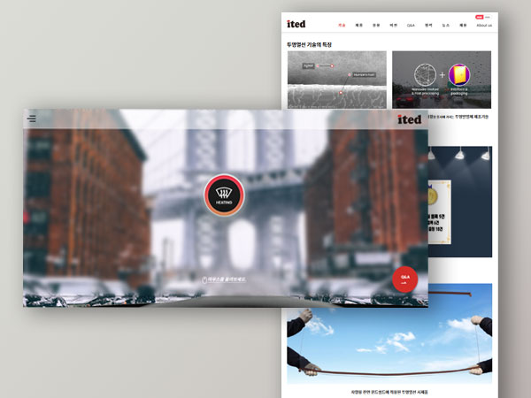

아이테드
투명 발열 글래스를 활용한 2차 제품 적용사례를 소개하고 효과적으로
알릴 수 있도록 제작한 홈페이지입니다

Key Features
- 한/영 전환 기능을 통해 하나의 사이트에서 두 가지 언어 효과를 제공하여, 국내외 사용자 모두에게 최적화된 접근성을 제공합니다.
- 쉽게 문의할 수 있도록 Q&A플로팅 배너를 통해 컨택트 페이지로 이동이 용이하도록하였습니다.
- 사용자가 드래그 및 이동 인터랙션을 통해 투명열선의 장점을 직접 경험할 수 있도록 설계하여, 사이트 체류 시간을 증가시키고 몰입도를 높였습니다.